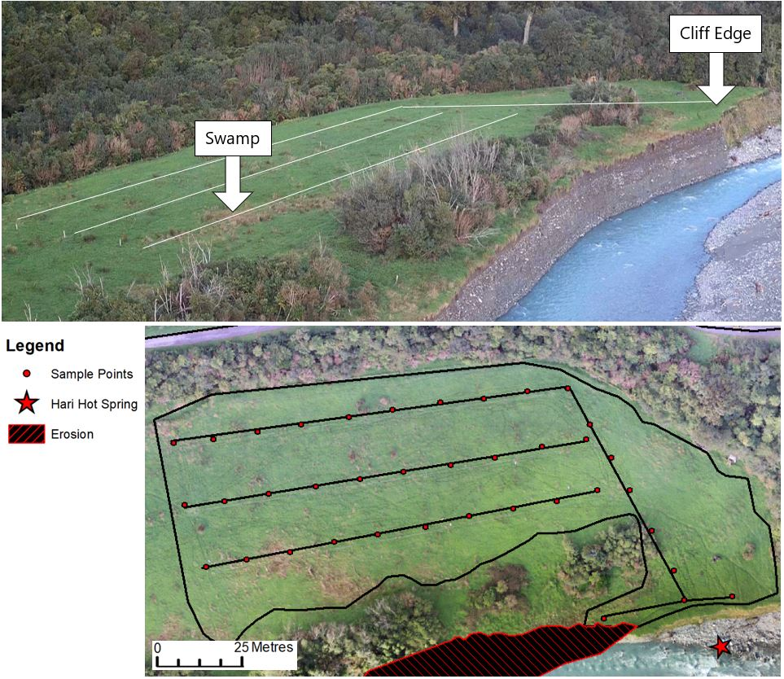

Masters Thesis Project
Assessing the potential application of remote sensing and field surveying
in identifying blind low enthalpy geothermal systems in Harihari, New Zealand.

Myself in the stripped jacket next to my student, showing the UAV technicians where to fly the UAV surveys.
PROJECT
The purpose of the study was to test the feasibility of using aerial and field surveys to detect surface blind enthalpy energy systems.
It is hypothesised that these blind enthalpy systems underground would release an influx of CO2, of which the abundance of CO2 introduced into the system,
is absorbed into the roots of the overlying vegetation (grass, bushes etc.).
This accelerates plant growth through photosynthesis which would be detected in remote and field surveying with higher NDVI values,
CO2 fluxes and soil temperature.
{kind=link}
OBJECTIVE
Ultimately the point is to use remote sensing to more accurately detect smaller geothermal resources that could be developed on a smaller scale.
Eventually this would hypothetically reduce the cost of resource exploration and increase energy development.
WORK
My role in this research project was to design a system where the methods (of data collection) could be developed and optimized for time and accuracy.
The methods of data collection went through multiple rounds of reiteration based on my judgement of efficiency.
With initial help from the technicians, I did all the preparatory
work myself (image below), the system needed to be easily understood, by the team that I would later lead in Harihari.
The Study site (image below) is located on the West Coast of New Zealand. This area is situated on a tectonic plate boundary where there are many active geothermal systems that we can observe.
{kind=link}
We used UAVs equipped with multispectral and thermal cameras. Multispectral IR imaging provided valuable information on plant health using the NDVI. The field survey used the Trimble R8 GNSS system to record each sampled ground point where I used the LI-820 CO2 Gas Analyzer with soil temperature probes (20cm & 50cm long).
{kind=link}
{kind=link}
{kind=link}
{kind=link}
{kind=link}
{kind=link}
My team also included a student who became interested in what I was doing after over hearing a conversation that I had, which ultimately ended with him joining my team.
I agreed that I would teach him my methods (for his upcoming MSc. Project) and in return he assisted me in recording the field data, learning in the process.
This student went on to complete his masters in GIS.
{kind=link}
END RESULT
The results suggested that in Harihari the interaction between subsurface hydrothermal fluids and the overlying soil and vegetation could be
detected using the methods outlined above.
The Image (below) showed elevated levels of CO2 flux, soil temperature at both 20 and 50cm deep at the swamp and cliff edge. Cliff edge is situated above a known geothermal area and the swamp is a theorised to be product of subsurface geothermal activity. NDVI was relatively high, but exhibited a lot of 'noise' with significant reductions in alternative surface types (not soil or grass). The results also showed elevated surface temperature values however the sample size is too small to draw any meaningful conclusions.
{kind=link}
{kind=link}

The results ultimately suggest that the hydrothermal soil interaction could be detected in Harihari. To see more of the backend work such as my python code, kriging, graphs, tables etc. that I used to develop the model and complete the calculations, check my out thesis from pages 59 (47) onwards
REFLECTION
Completing this thesis project forced me get comfortable with many different scientific disciplines: geology,
electromagnetic physics, electrical engineering, biology, chemistry, environmental science, computer science and geographic information science.
I enjoyed researching the relevant topics.
I strengthened my skills all areas but the three areas that stand out was leadership, programming and problem solving.
While I grew as an analytical researcher I also learned that despite how hard I tried I could not control everything.
There will always be set backs and learning how continue making progress was paramount.
The experience gained here was extremely valuable and I am excited to tackle the next project head on.
Summary of Steps Taken
Step |
DESCRIPTION |
|---|---|
| Aerial Data Collection: | Create Infrared and Thermal Maps |
| Field Data Collection: | Record Soil CO2 and soil temperature with the Trimble R8 |
| Image Processing: | Images are processed in software for analysis |
| Develop Analytical Model: | Execute kriging analysis in arcMap and produce a CSV file |
| Synthesize Data: | Develop python code to analyse the data | Graphs, Tables and Probability Charts: | Python output file used to visually display data | Bonus: | Satellite image correction | Bonus II: | Produce UAV cinematic in adobe premiere 2019 CC |